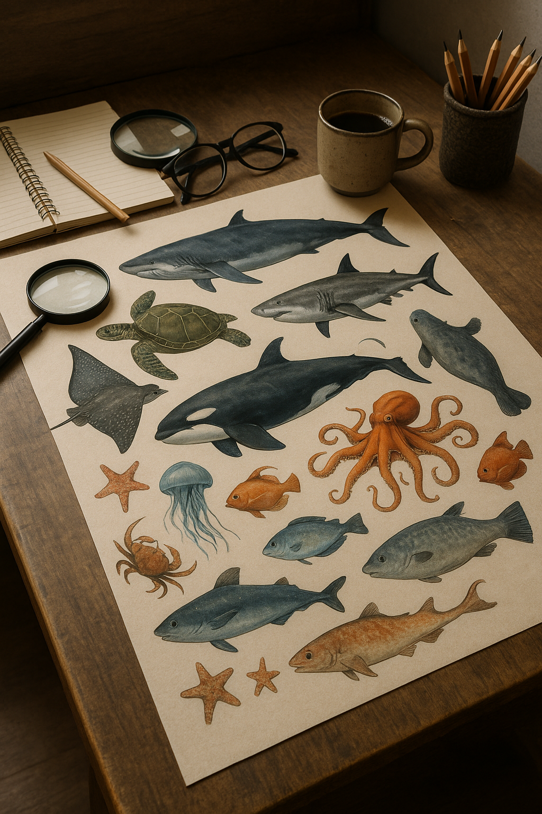
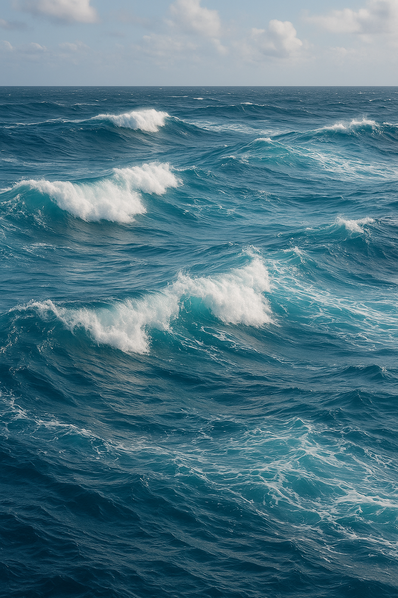
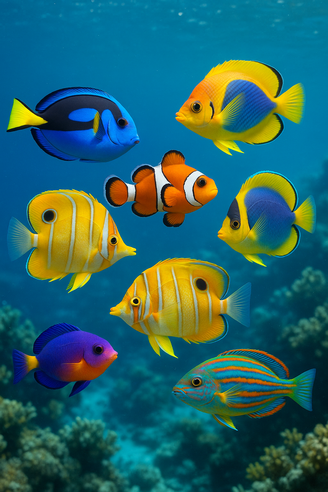
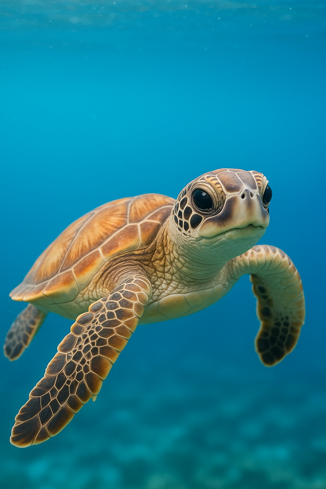
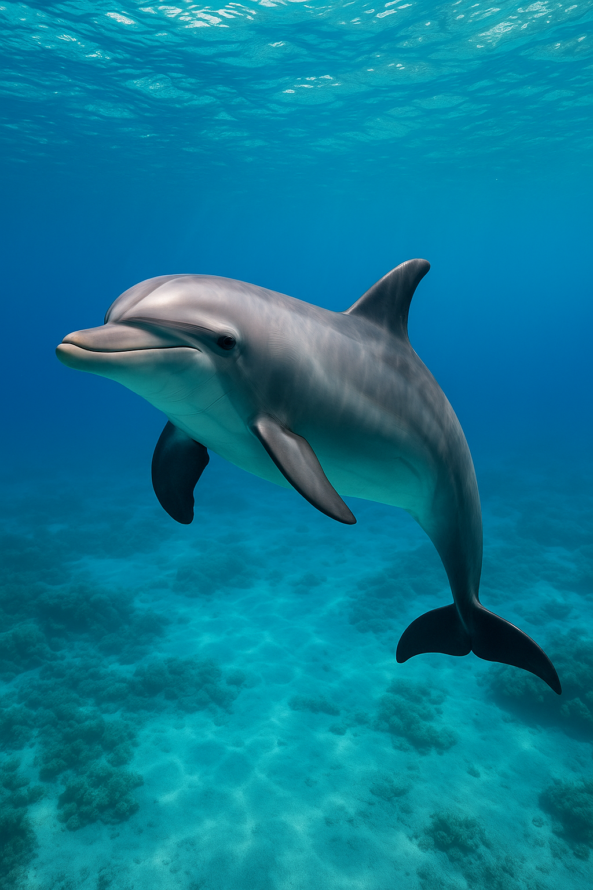
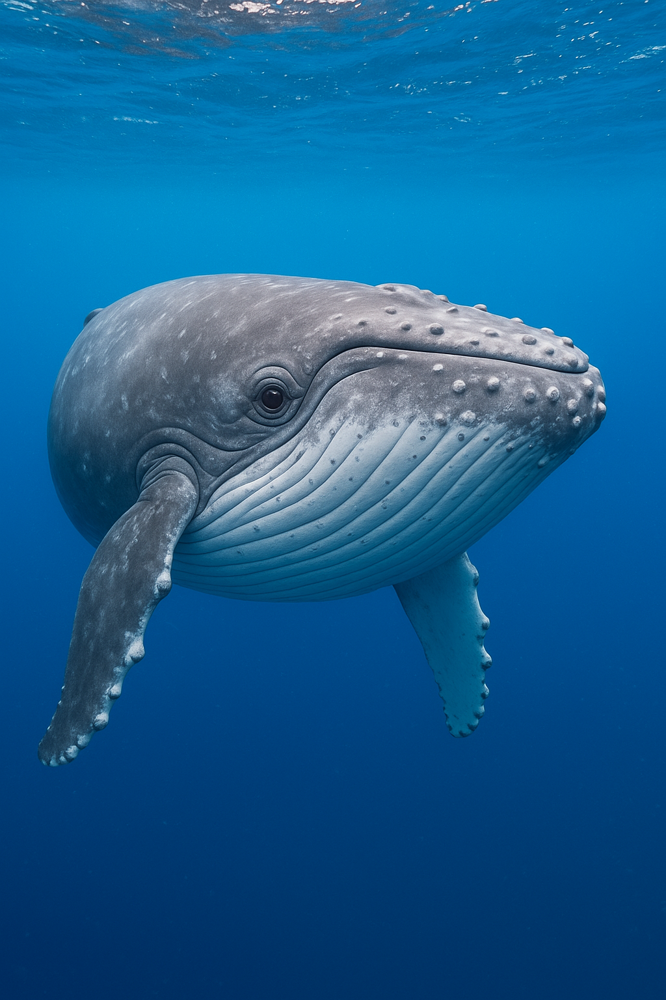
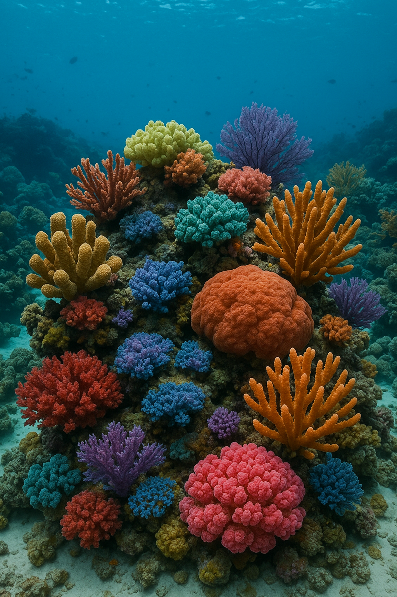

A importância do plâncton
O plâncton é a base da cadeia alimentar marinha e produz mais da metade do oxigênio do planeta.
Descubra o mistério e a beleza das criaturas do fundo do mar
Um mergulho educativo para descobrir espécies fascinantes e aprender a protegê-las

O plâncton é a base da cadeia alimentar marinha e produz mais da metade do oxigênio do planeta.
Apesar de parecerem flores, os corais são pequenos animais que vivem em colônias e formam recifes gigantescos.
Mais de 80% do oceano ainda não foi explorado — há espécies que os cientistas nem imaginam que existam.






O atum-rabilho, que pode nadar a 70 km/h!
São variações do nível do mar causadas pela gravidade da Lua e do Sol.
Sim, por conta do aquecimento global e do plástico.
Fotos de Unsplash, Pexels e Pixabay.
Informações: WWF Brasil, National Geographic, Instituto Oceanográfico da USP.
Design e código por Maily e Thais.